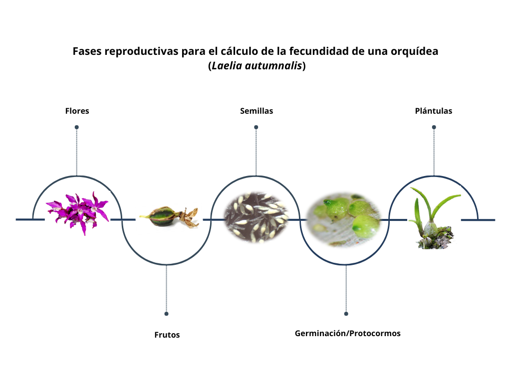

Code
library(Rage)
library(tidyverse)
library(gt)library(Rage)
library(tidyverse)
library(gt)Cualquier población de organismos que no se reproduzca, no podrá crecer. Por lo tanto, la reproducción es un proceso fundamental para el crecimiento de las poblaciones y determinar si el reclutamiento es suficiente para que la población crezca. En el caso de las poblaciones de plantas, la reproducción puede ser sexual o vegetativa. Cuando se incluye crecimiento poblacional vegetativo es necesario incluir una matriz de clonación. En este capítulo se considera únicamente la reproducción sexual, que es el caso más común en los estudios de ecología de poblaciones.
Como se obtiene e incorpora la reproducción en los modelos de crecimiento poblacional es importante, ya que la forma en que se incorpora puede afectar los resultados del modelo y las conclusiones que se pueden extraer de él. Comenzamos primero para describir errores comunes en el uso de las matrices de transición para calcular la fecundidad.
El primer paso para calcular la fecundidad es definir las clases de edad o tamaño de los individuos de la población. Las clases de edad o tamaño son grupos de individuos que tienen características similares en términos de edad o tamaño. Por ejemplo, en una población de peces, las clases de edad pueden ser: juveniles, adultos jóvenes y adultos viejos. En una población de plantas, las clases de tamaño pueden ser: plántulas, juveniles y adultos. Si la primera etapa del modelo es “plántula”, entonces la manera de incluir reclutamiento es contabilizar las “nuevas plántulas” que se incorporan a la población en cada período de tiempo. Es importante que la etapa de reproducción sea medida en la misma escala que las otras etapas reclutamiento y en el mismo periodo de tiempo.
Un ejemplo incorrecto seria calcular la fecundidad de una población usando la cantidad de semillas producidas pero la primera etapa del modelo son plántulas. En este caso, la fecundidad debe ser calculada en términos de plántulas, no de semillas. Por lo tanto, es necesario convertir la cantidad de semillas producidas en plántulas, utilizando una tasa de germinación o una tasa de supervivencia de plántulas.
La fecundidad en orquídeas se refiere a la capacidad reproductiva efectiva de una población, medida a través de la producción de flores, el éxito en la polinización, formación de frutos, germinación de semillas y establecimiento de plántulas. Por consecuencia la fecundidad es un conjunto de eventos que definen la viabilidad de la población a largo plazo. Aunque parece un proceso sencillo, la fecundidad es un proceso complejo que involucra muchos factores, como la disponibilidad de recursos, la competencia entre individuos, la depredación, enfermedades, entre otros.
La fecundidad inicia con la producción de flores que por sí sola implica una inversión de nutrientes y agua que la planta almacena dentro de su estructura. Así mismo, las flores desarrollan una variedad de atributos para tratar de asegurar la polinización, estos atributos florales (color, aroma, néctar, polen) pueden ser costosos en términos energéticos por lo que cada atributo debe ser optimizado. Los costos pueden ser tan altos que incluso puede poner en riesgo la sobrevivencia de la planta. Por ejemplo; la polinización manual realizada en la orquídea Comparettia falcata (Meléndez-Ackerman, Ackerman & Rodriguez-Robles, 2000), mostró una correlación positiva entre el mayor número de flores producidas con el mayor porcentaje de frutos interrumpidos (frutos abortados). En Spiranthes spiralis un año con alto porcentaje de producción de flores, dio lugar a un siguiente año vegetativo en más del 80% de los individuos (Willems & Dorland, 2000). Otro ejemplo se reportó en la orquídea perene Cypripedium acaule que redujo la probabilidad de florecer y el tamaño del área foliar el siguiente año (Primack & Stacy, 1998). Así mismo, se reportó que el incremento de frutos puede ser compensado en la siguiente temporada con la disminución del crecimiento posterior (menor producción de follaje, menor tamaño de hojas número de flores, número de inflorescencias y aborto de frutos) en la orquídea Encyclia krugii (Ackerman, 1989). Esto sugiere que para cada temporada de reproducción se necesita un periodo de tiempo considerable, donde la planta pueda recuperar y almacenar nutrientes necesarios para la reproducción del próximo ciclo. Por lo tanto, un alto índice reproductivo (costo de reproducción) puede representar una gran desventaja, siempre y cuando la planta cuente con un sistema energético de reserva limitado.
La familia Ochidaceae presenta diversidad en sistemas reproductivos de las especies, a sí encontramos orquídeas autógamas y alógamas (Willmer, 2011; Bateman, 2020). A pesar de que las orquídeas presentan barreras físicas o genéticas que evitan la autopolinización (i.e., rostelo, incompatiblidad genética), se ha reportado que varias especies de orquídeas pueden polinizarse con su propio polen y producir frutos y semillas viables (Ackerman et al., 2023). Catling, reporta 350 especies de orquídeas en las que al menos una de sus poblaciones se autopoliniza (Catling, 1990). La autopolinización es muy común en las orquídeas, el 31% de las especies producen frutos a través de la autopolinización (Evans & Jacquemyn, 2020), pero es más común entre orquídeas que tenga una distribución geografica limitada o aquellas con limitación de polinizadores (Suetsugu, 2015). Sin embargo, la planta que se autopoliniza no necesariamente debe ser autógama, la mayoría de las orquídeas muestran diferentes grados de autogamia facultativa (Tałałaj et al., 2017). La autopolinización facultativa se ha observado bajo presiones abióticas, cuando el ambiente es objeto de disturbio antropogénico (Talalaj & Skierczynski, 2015; Tałałaj et al., 2017). Por ejemplo: las flores de Epipactis muestran adaptaciones morfológicas para permitir la autopolinización y asegurar la producción de semillas. La autogamia garantiza la producción de frutos, sin embargo, el peso y tamaño del fruto puede ser menor y se puede reducir el número de semillas y su viabilidad (semillas sin embrión, embriones no viables, protocormos albinos) (Tremblay et al., 2005; Paiva Neto et al., 2022), probablemente por autocompatibilidad genética que se ha registrado para más de 750 especies de orquídeas como Chondrorhyncha, Coelogyne, Dendrobium, Lycaste, Notylia and Oncidium (Johnson & Edwards, 2000; Tremblay et al., 2005; Barreda-Castillo et al., 2024).
Por otro lado, la polinización cruzada incrementa el éxito de la fecundación introduciendo diversidad genética y superar los mecanismos de la auto-incompatibilidad (Zhang et al., 2021). Aunque las orquídeas autocompatibles comúnmente incrementan el número de frutos (Caballero-Villalobos et al., 2017), muchas especies de orquídeas producen frutos solo por polinización cruzada (Zhang et al., 2021). Por ejemplo, en la subfamilia Epidendroideae se presenta un gran número de especies auto-estériles, por lo que pocas especies pueden ser autopolinizadas (Fantinato et al., 2017; São Leão et al., 2019). En contraste, en la subfamilia Vanilloideae y Cypripedioideae, se observa la producción de frutos a partir de autopolinización, aunque la morfología floral sugiere polinización cruzada Lopes et al. (2022). Finalmente hay casos de auténtica autopolinización y autofecundación estricta y obligada; se presenta en las flores cleistógamas, las que no llegan a abrirse una vez formadas, pero sí son capaces de formar frutos fértiles (i.e. Lepanthes dodiana). Esta estrategia se presenta en algunas plantas colonizadoras o propias de desiertos, donde las posibilidades de encontrar polen de otro individuo son remotas, por la ausencia de polinizadores o por la falta de otros individuos de la misma especie (Barreda-Castillo et al., 2024). La autogamia no requiere grandes cantidades energéticas, dado que no produce ninguna recompensa (Eckert & Herlihy, 2004). Al igual que en la producción por engaño, donde las plantas no producen recompensas, pero la producción de frutos suele ser más baja (Golubov & Mandujano, 2009).
El 65% de las especies de esta familia ofrecen recompensa (Llabrés, 2015). El néctar ha constituido la recompensa florar más extendida para atraer a los polinizadores (Neiland & Wilcock, 1998). Pero la producción de néctar supone un gran gasto energético para la planta, que se ve obligada a reducir o rehusar otras estructuras. Ante esta situación, las orquídeas han desarrollado diversos mecanismos de polinización por engaño y se estima que hasta un tercio de las especies (entre 6,000 y 8,000 especies) de orquídeas son polinizadas por engaño Ackerman (1989), es decir, no ofrecen ninguna recompensa. Las especies con polinización por engaño no necesitan sacrificar otras estructuras, permitiéndose un crecimiento mayor o incluso mayor número de flores, altura de la planta, el tamaño de la inflorescencia (Henneresse, Wesselingh & Tyteca, 2017; Scopece et al., 2017), factores que intentan asegurar el mayor rendimiento reproductivo posible. Así, el aumento del tamaño de la exhibición floral aumenta la atracción y las visitas de los polinizadores (Peakall, 1989; Burd, 1995; Aragón & Ackerman, 2004; Grindeland, Sletvold & Ims, 2005; Li et al., 2011; Sletvold & Ågren, 2011). La autogamia y polinización por engaño no requiere grandes cantidades energéticas, dado que no produce ninguna recompensa (Eckert & Herlihy, 2004), pero la producción de frutos suele ser más baja (Golubov & Mandujano, 2009). Por ello, se ha reportado que las orquídeas con polinización por engaño suelen producir sólo la mitad de frutos que aquellas que no usan este tipo de polinización (Johnson & Bond, 1997; Neiland & Wilcock, 1998; Tremblay et al., 2005; Jersáková, Johnson & Kindlmann, 2006).
En trabajos de demografía poblacional, la fecundidad se ha calculado a diferentes niveles (flores, frutos, semilla o plántulas). Algunos pocos se han realizado considerando el número de flores que produce una planta entre el número de individuos de una población, otros consideran que la producción de frutos es el indicador más exacto para determinar el éxito reproductivo (Proctor & Harder, 1994). Por ejemplo: en Dracula chimaera la fecundidad se obtuvo calculando la probabilidad de que una planta con flor desarrollara fruto, es decir, el número de frutos presentes en el total de plantas por etapa sobre el número total de plantas de la misma etapa. Sin embargo, es importante destacar que la producción de frutos es una fase donde aún prevalece cierta incertidumbre sobre la calidad de las semillas que influye en la germinación y a futuro en el establecimiento neto de nuevas plántulas.
El número de semillas en un fruto va de miles hasta millones, pero no todas las semillas garantizan su viabilidad, es bien sabido que un gran porcentaje de ellas son semillas vacías (carecen de embrión) y otras más pueden desarrollar embriones no viables. Dicha información indica que, no todas las semillas producidas tienen la capacidad de generar un nuevo individuo. Por lo que algunos estudios han incluido la viabilidad de las semillas como un nivel más para obtener el valor de la fecundidad, como se realizó para Laelia autumnalis (Emeterio-Lara; comentario personal).
Aunque podemos tener una gran cantidad de semillas viables, una vez que inicia la dispersión se enfrentan a varios otros factores como grandes retos. Las condiciones abióticas (temperatura, luz y humedad) en combinación de factores abióticos (características del forófito, disponibilidad de los hongos endófitos, así como la presencia y el daño por hervívoros o depredadores de semillas y plántulas, influyen tanto para que se lleve a cabo la micorrización como para la germinación y establecimiento de las plántulas (Dressler, 1993). En conjunto estos elementos definen un micrositio con características específicas para la germinación, que bien puede ser una fisura en la corteza de un árbol, un mechón de musgo, la superficie de una raíz de árbol vivo o un aglomerado de humus (Rasmussen et al., 2015). A medida que las semillas pasan por varias etapas de germinación, desde la imbición hasta el desarrollo de plántulas de dos hojas (Arditti, 1967), la mortalidad prevalece en altas cifras. Por ejemplo, Batty et al. (Batty et al., 2001) estimaron que para Caladenia arenicola de aproximadamente 34500 semillas, menos del 1% alcanzó una etapa de plántulas que podría sobrevivir a la primera sequía de verano.
El reclutamiento se define como el número de plántulas que logran establecerse en el forofito y tienen el potencial de sobrevivir y pasar a la siguiente etapa demográfica (juvenil). Las orquídeas presenten bajas tasas de reclutamiento (Larson & Batson, 1978; Zotz, 1998; Winkler & Hietz, 2001; Garcı́a-Soriano, 2003), ya que están en función de la susceptibilidad del estrés hídrico durante la época seca Benzing (1981), a enfermedades y a depredadores. En Erycina crista galli en promedio un individuo adulto produce 0.033 plántulas/año. Por otro lado, para Guarianthe aurantiaca, en promedio, un individuo reproductivo produce menos de un nuevo individuo por año.
Para el caso de la fecundidad en los modelos demográficos, es importante llegar hasta este punto, ya que es el valor neto que representa el número de los nuevos individuos que conformarán la siguiente generación en una población natural. Sin embargo la obtención de la fecundidad hasta la fase de plántula, representa uno de los grandes retos que es asegurar la identidad de una especie de orquídea, en este caso un aspecto importante a considerar es la cercanía a la planta madre, ya que, aunque el viento favorece la dispersión de las semillas a larga distancia, la gran mayoría se aloja cerca de la planta madre (Chung, Nason & Chung, 2004; Trapnell, Hamrick & Nason, 2004; Jersáková & Malinová, 2007). Pese a ello, existen algunos trabajos que han llegado al registro de plántulas sobrevivientes después de un periodo de tiempo (generalmente un año), algunos de ellos fue realizado para Brasavolla cucullata (Ackerman et al., 2020), E. crista galli (Maldonado Flores et al., 2006), donde la fecundidad se estimó dividiendo el número de nuevos reclutamientos (plántulas) observados en el campo entre el número máximo de frutos reportado durante el período de estudio o de un año a otro como se realzó para Guarianthe aurantiaca (Mondragón, 2009). Datos que nos ofrecen valores más certeros en la proyección demográfica de una orquídea para su conservación.

Tabla de algunos ejemplos de fecundidad en orquídeas, donde se muestra la especie, el índice de fecundidad y la referencia del estudio.
| Especie | Indice de Fecundidad | Referencia |
|---|---|---|
| Lepanthes eltoroensis | Cantidad de Plántulas / Adultos reproductivos | Tremblay & Hutchings (2003) |
| Erycina crista-galli | 0.033 plántulas/año | Maldonado Flores (2005) |
| Encyclia tampensis | 0.1 plántulas/fruto | Larson (1992) |
| Guarianthe aurantiaca | <1 plántula/año | Mondragón (2009) |
Los pocos resultados disponibles sugieren que las orquídeas crecen bastante lento y requieren 8-19 años para ser fértiles (Hernández-Apolinar, 1992; Larson, 1992; Zotz, 1995, 1998). Sin embargo en orquídeas miniatura o de ramilla (principalmente Pleurothalliinae) que maduran dentro de uno o unos pocos años son una excepción (Chase, 1987). Para predecir el crecimiento y la edad de las plantas de Lycaste aromatica medidas, utilizamos la producción regular de pseudobulbos que se conservan durante varios años. Basado en el crecimiento de pseudobulbos, se predice la floración de Encyclia tampensis a una edad de aproximadamente 15 años años. Sin embargo, cabe resaltar que, bajo un sistema de cultivo controlado, la etapa de pre-bulbo dura de 0.5 a dos años, y la primera floración puede ocurrir en solo cinco a seis años (H. Lutero, comm. pers.).
La primera fila representa la fecundidad de la población en la posición 1,3 (fila, columna), que es la cantidad de semillas promedia producidas por un adulto. Pero la fecundidad debe ser calculada en términos de plántulas, no de semillas. Por lo tanto, es necesario convertir la cantidad de semillas producidas en plántulas, utilizando una tasa de germinación o una tasa de supervivencia hasta la etapa de plántulas. Por consecuencia este ejemplo tendría un sesgo, ya que la fecundidad no es calculada en términos de plántulas, no de semillas.
matA_sem <- rbind(
c(0.0, 0.0, 1000), # fecundidad 1000 semillas en promedio por adulto
c(0.5, 0.0, 0.0),
c(0.0, 0.4, 0.0)
)Visualizamos el ciclo de vida de la población con la función plot_life_cycle() de la librería Rage:
etapas <- c("plántula", "juvenil", "adulto")
plot_life_cycle(matA_sem, stages=etapas, fontsize = 5)Por consecuencia una alternativa es calcular la fecundidad en términos de nuevas plántulas en periodo siguiente es utilizando una tasa de germinación o una tasa de supervivencia hasta la etapa de plántulas. Por ejemplo, si la tasa de germinación es del 50% y la tasa de supervivencia de plántulas es del 20%, y hay 75 adultos potencialmente reproductivos entonces la fecundidad en términos de plántulas sería: \[Fecundidad = (1000 \times 0.5 \times 0.2) / 75 = 1.33\]
Por consecuencia la matriz cambia a:
matA_pl <- rbind(
c(0.0, 0.0, 1.333), # fecundidad 100 plántulas en promedio por adulto
c(0.5, 0.0, 0.0),
c(0.0, 0.4, 0.0)
)
etapas <- c("plántula", "juvenil", "adulto")
plot_life_cycle(matA_pl, stages=etapas, fontsize = 5)Otra alternativa es calcular la fecundidad en términos de plántulas directamente, utilizando una tasa de fecundidad por adulto. Por ejemplo, si no hay información sobre la cantidad de semillas producidas, y/o la supervivencia y germinacion de estas a plántulas el metodo anterior no es muy viable. Se puede incluir un estimado del reclutamiento tomando en cuenta la cantidad de plántulas producidas total en el periodo \(t_2\) divido por la cantidad de adultos en el periodo \(t_1\). Entonces si hubo 50 nuevas plántulas en el periodo \(t_2\) y había 100 individuos en la etapa de adultos en el periodo \(t_1\), entonces la fecundidad en términos de plántulas sería: \[Fecundidad = 50 / 100 = 0.5\].
matA_pl2 <- rbind(
c(0.0, 0.0, 0.5), # fecundidad 0.5 plántulas en promedio por adulto
c(0.5, 0.0, 0.0),
c(0.0, 0.4, 0.0)
)
etapas <- c("plántula", "juvenil", "adulto")
plot_life_cycle(matA_pl2, stages=etapas, fontsize = 5)Hay unos supuestos importante.
Naturalmente, no hay métodos perfectos para calcular la fecundidad, pero este es un método que puede ser usado cuando no hay información sobre la cantidad de semillas producidas, y/o la supervivencia y germinación de estas a plántulas. Siempre puede haber semillas que germinan en otros periodos de tiempo, que provienen de otros sitios y que no son contabilizadas en el periodo \(t_2\). Tanto que estos estimados no sean sesgados, pueden ser usados para calcular la fecundidad en términos de plántulas.
El mejor de los casos seria de poder seguir el esfuerzo reproductivo de cada individuo, la cantidad de semillas producida, y seguir estas semillas para observar su germinación en el campo. El reto de seguir todo estos pasos es imposible, por consecuencia tenemos que asumir algunos procesos biológicos, por ejemplo entre otros (tratamos aquí de ser exhaustiva)